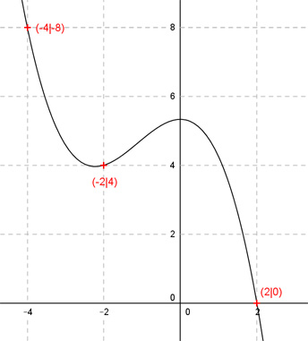

Aufgabe 54 Der Graph einer ganzrationalen Funktion 3. Grades geht durch die Punkte (2|0), (-2|4), (-4|8) und hat einen Hochpunkt auf der y-Achse. Wie lautet seine Funktionsgleichung?  Allgemeine Form einer ganzrationalen Funktion 3. Grades: f(x) = ax3 + bx2 + cx + d f’(x) = 3ax2 + 2bx + c f’’(x) = 6ax + 2b 4 Bedingungen: 1. Geht durch den Punkt (2|0) bedeutet: f(2) = 0 --> a * 23 + b * 22 + c * 2 + d = 0 --> 8a + 4b + 2c + d = 0 I 2. Geht durch den Punkt (-2|4) bedeutet: f(-2) = 4 --> a * (-2)3 + b * (-2)2 + c * (-2) + d = 4 --> - 8a + 4b - 2c + d = 4 II 3. Geht durch den Punkt (-4|8) bedeutet: f(-4) = 8 --> a * (-4)3 + b * (-4)2 + c * (-4) + d = 8 --> - 64a + 16b - 4c + d = 8 III 4. Hochpunkt auf der y-Achse bedeutet: f’(0) = 0 --> 3a * 02 + 2b * 0 + c = 0 --> c = 0 I + II * (-1) (c = 0 eingesetzt) 8a + 4b + d = 0 8a - 4b - d = -4 ------------------ 16a = -4|:16 1 a = - --- = -0,25 4 I + II 8a + 4b + d = 0 -8a + 4b + d = 4 ----------------- 8b + 2d = 4 IV I * 8 + III 64a + 32b + 8d = 0 -64a + 16b + d = 8 -------------------- 48b + 9d = 8 V IV * (-6) + V -48b - 12d = -24 48b + 9d = 8 ----------------- -3d = -16 |:3 16 d = ---- 3 d = 16/3 in IV eingesetzt: 8b + 2 * 16/3 = 4 8b + 32/3 = 12/3 |-32/3 8b = -20/3 |:8 b = -5/6 Gesuchte Funktionsgleichung: f(x) = -0,25x3 - (5/6)x2 + 16/3